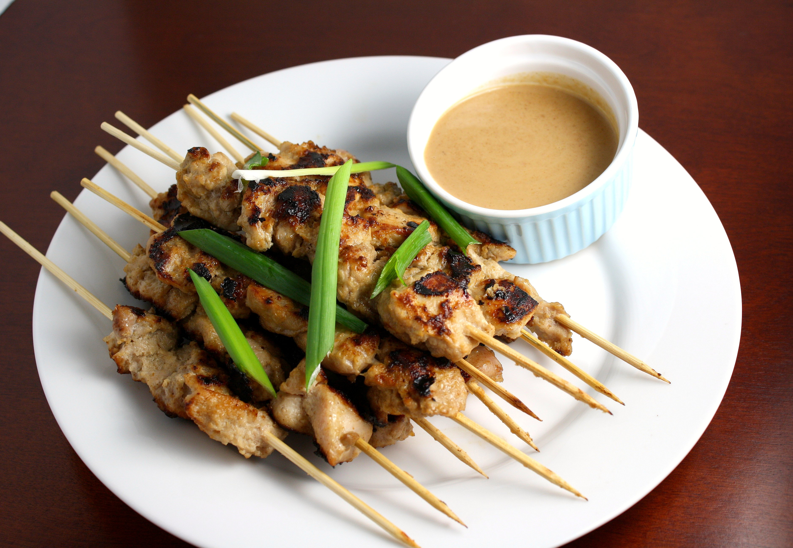

Chicken Satay

Description
Satay Chicken goes crazy on a Tuesday night when I'm feeling a little bored of our usual
cuisine.
Just great flavors to keep me interested and the kids happy.
Ingredients
Marinade & Chicken
- 1 tablespoon Thai-style red curry paste
- 4 teaspoons curry powder
- 1 1/2 teaspoons kosher salt
- 1 teaspoon white sugar
- 1 teaspoon brown sugar
- 1 teaspoon fish sauce
- 1/3 cup full fat coconut milk
- 1 1/2 pounds skinless, boneless chicken thighs
- bamboo skewers
Peanut Sauce
- 1/2 cup smooth all-natural peanut butter
- 1/2 cup full fat coconut milk
- 2 cloves garlic, crushed
- 1 tablespoon brown sugar
- 2 teaspoons fish sauce
- 2 teaspoons soy sauce
- 1 lime, juiced
- teaspoon sesame oil
- 1 teaspoon Sriracha hot sauce, or to taste
- 2 tablespoons water, or more as needed
For Serving
- 2 tablespoons sliced red chilies
- 1/4 cup chopped roasted peanuts
- 1/4 cup chopped cilantro leaves
- lime wedges (optional)
Steps
- For marinade, combine curry paste, curry powder, salt, white sugar, brown sugar, fish
sauce, and coconut milk in a bowl. Stir until smooth and set aside.
- Cut chicken thighs into approximately 1-inch pieces, and transfer into the marinade.
Mix thoroughly, then wrap and refrigerate for at least 2 hours or up to overnight
before grilling.
- For peanut sauce, add peanut butter, coconut milk, garlic, brown sugar, fish sauce, soy
sauce, lime juice, sesame oil, and Sriracha to a bowl and whisk thoroughly together.
Add water if desired to thin the sauce. Taste for seasoning, and adjust if necessary.
Wrap and refrigerate until needed.
- Soak bamboo skewers in water for at least 30 minutes before using.
- Once chicken is marinated, skewer chicken pieces on bamboo so that the meat is touching,
but not pressed tightly together.
- Prepare a charcoal grill. Charcoal should be ashy white and very hot. Brush the grates
lightly with oil.
- Grill chicken over charcoal until chicken firms up and springs back to the touch, 4 to
5 minutes per side. An instant-read thermometer inserted into the center should read at
least 165 degrees F (74 degrees C).
Home